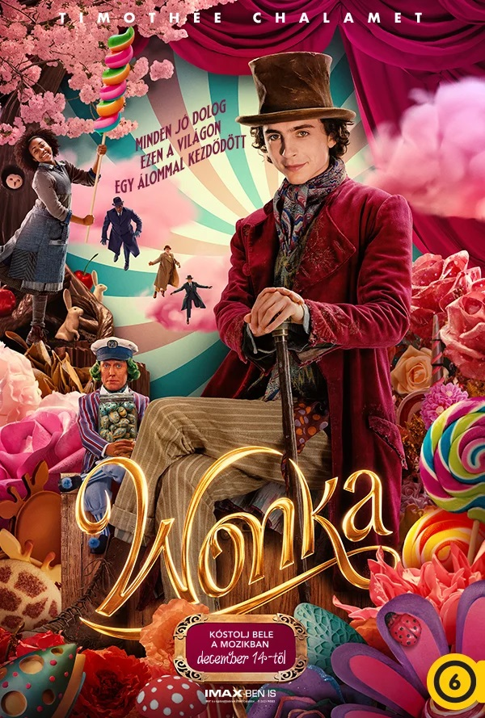

| ID |
Név |
Kép |
Játékidő |
Ár |
Leírás |
Készlet db |
| F001 |
A fattyú |
 |
127 perc |
Felnőtt: 3000 Ft, diák: 2000 Ft, 6 éves kor alatt és 65 éves kor felett ingyenes |
1755-ben Ludvig Kahlen kapitány elindul, hogy teljesítsen egy lehetetlennek tűnő küldetést: meg akarja hódítani a zord, lakhatatlan dán vidéket. A férfi célja, hogy kolóniát építsen a király nevében. De egy könyörtelen helyi földesúr másképp gondolkodik és arrogánsan azt hiszi, hogy ez a föld kizárólag az övé. Kahlen keményfejű és úgy érzi, a király megbízása és saját elszántsága elegendő ahhoz, hogy sikerrel járjon. Az összecsapás elkerülhetetlennek tűnik a két fél között, a kapitányt ráadásul az érzelmei is fűtik, miután rátalál élete szerelmére. |
100000 |
| F002 |
Aquaman és az elveszett királyság |
 |
124 perc |
Felnőtt: 3000 Ft, diák: 2000 Ft, 6 éves kor alatt és 65 éves kor felett ingyenes |
Az óceán soha nem békés! Ezért nem pihenhet meg egyetlen percre sem az óceánok hét királyságának uralkodója. Black Manta megpróbálta már legyőzni Aquamant, a világ tengereinek urát (Jason Momoa), de kudarcot vallott. Továbbra is meg akarja bosszulni az apja halálát, így aztán bármire hajlandó, és bárkivel szövetkezik, hogy elpusztítsa ősellenségét. És most erősebb, mint eddig bármikor, mert megszerezte a legendák csodafegyverét, a fekete szigonyt, amelynek segítségével egy ősi, gonosz erőt szabadít a világra. Aquaman kénytelen kiszabadítani börtönbe zárt testvérét, Orm királyt (Patrick Wilson), Atlantisz egykori uralkodóját. Békét nem kötnek, de átmeneti szövetséget igen - ha nem teszik meg, akkor Aquaman családja, azután az összes tenger, végül az egész világ elpusztul. |
96000 |
| F003 |
Lassie - Állati mentőakció |
 |
91 perc |
Felnőtt: 3000 Ft, diák: 2000 Ft, 6 éves kor alatt és 65 éves kor felett ingyenes |
Lassie kalandja folytatódik. Flo imádott kutyájával, Lassie-vel nagynénjénél nyaral Dél-Tirolban. A felhőtlen nyaralást beárnyékolja Pippa, a kis terrier eltűnése, akit vélhetően elraboltak. Flo és Lassie azonnal a kis négylábú keresésére indul. Hamarosan kiderül, hogy nem Pippa az egyetlen kutyus, aki rejtélyes körülmények között tűnt el. Lassie és barátai nyomozni kezdenek és kiderül, az ügy sokkal nagyobb titkokat rejt, mint gondolták. |
96000 |
| F005 |
Wonka |
 |
117 perc |
Felnőtt: 3000 Ft, diák: 2000 Ft, 6 éves kor alatt és 65 éves kor felett ingyenes |
Willy Wonka (Timothée Chalamet) igazi legenda. Végre lehull a lepel a csokik mágusa, az édességek géniusza, a legkülönlegesebb, legízesebb, legfurább csokigyáros, Willy Wonka életének nagy titkáról: arról, hogy ő is volt gyerek. Aztán fiatalember. Bejárta a világot, őrült csokikat talált fel, és még őrültebb álmokat hajkurászott: arra vágyott, hogy a világjárás véget érjen, ő letelepedjen, és megnyithassa bűvös-bájos-ízes-mágikus csokiboltját. De a szülővárosában sajnos már működik egy csokigyáros trió, amely a legkeserűbb módszerektől sem riad vissza, ha a csokibirodalmát kell megvédenie. Wonka azonban a bajban, a rabságban vagy akár egy gőzmosodában is megőrzi ötletekből kifogyhatatlan jó kedvét, és készen áll rá, hogy bebizonyítsa: a legjobb dolgok az életben egy nagy álommal kezdődnek, és annak, aki elég szerencsés hozzá, hogy Willy Wonka közelében éljen, azzal bármi megtörténhet. |
120000 |
| F006 |
Priscilla |
 |
113 perc |
Felnőtt: 3000 Ft, diák: 2000 Ft, 6 éves kor alatt és 65 éves kor felett ingyenes |
Amikor a tinédzser Priscilla Beaulieu egy bulin találkozik az akkor már szupersztár Elvis Presley-vel, a közösen töltött, intim pillanatokban az énekes egy teljesen más emberré válik: izgalmas szerető, szövetséges a magányban, és gyengéd legjobb barát. Sofia Coppola a nő szemszögéből meséli el Elvis és Priscilla hosszú és viharos kapcsolatát, a német katonai bázistól a Graceland-i álombirtokon töltött időkig. |
115000 |
| F007 |
Imádlak utálni |
 |
104 perc |
Felnőtt: 3000 Ft, diák: 2000 Ft, 6 éves kor alatt és 65 éves kor felett ingyenes |
Találkoztak, együtt töltöttek egy éjszakát, és azóta gyűlölik egymást. Van ilyen. Bea (Sydney Sweeney) és Ben (Glen Powell) biztos, hogy nem illenek össze. Ha néha véletlenül összefutnak valahol, tutira elszabadul a pokol: csak bántani tudják egymást. De lesz egy esküvő Ausztráliában, amin mindkettejüknek részt kell venniük. Nincs kibúvó, nincs duma: utazniuk kell. Néhány napon, néhány bulin, néhány vacsorán keresztül el kell viselniük egymás közelségét, miközben egy gyönyörű tengerparti házban ott kavarog körülöttük egy csomó régi szerelmük, néhány kíváncsi rokonuk és kavarni mindig kész felmenőjük. Szóval, azt teszik, amit két érett, felnőtt, felelősségteljes ember ilyenkor tehet: úgy tesznek, mintha szerelmespár lennének - azt remélik, hogy így mindenkinek könnyebb lesz. Nem is tévedhettek volna nagyobbat. |
105000 |